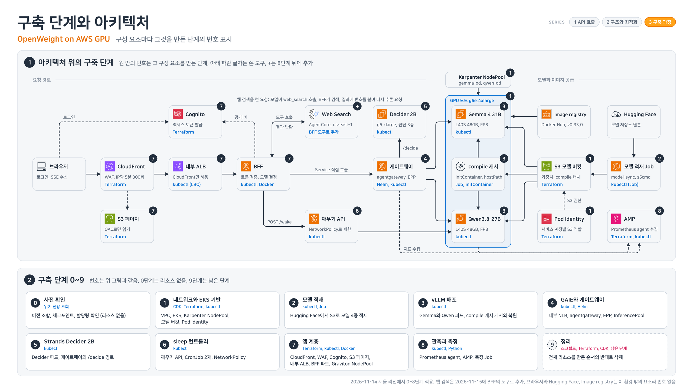
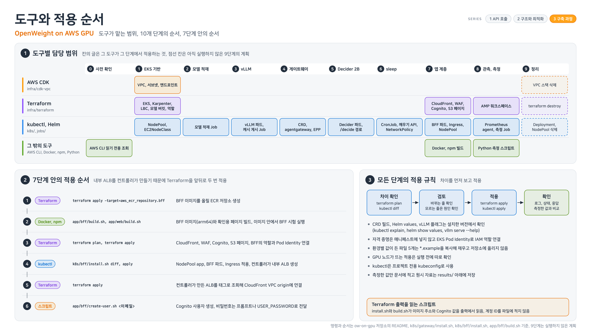
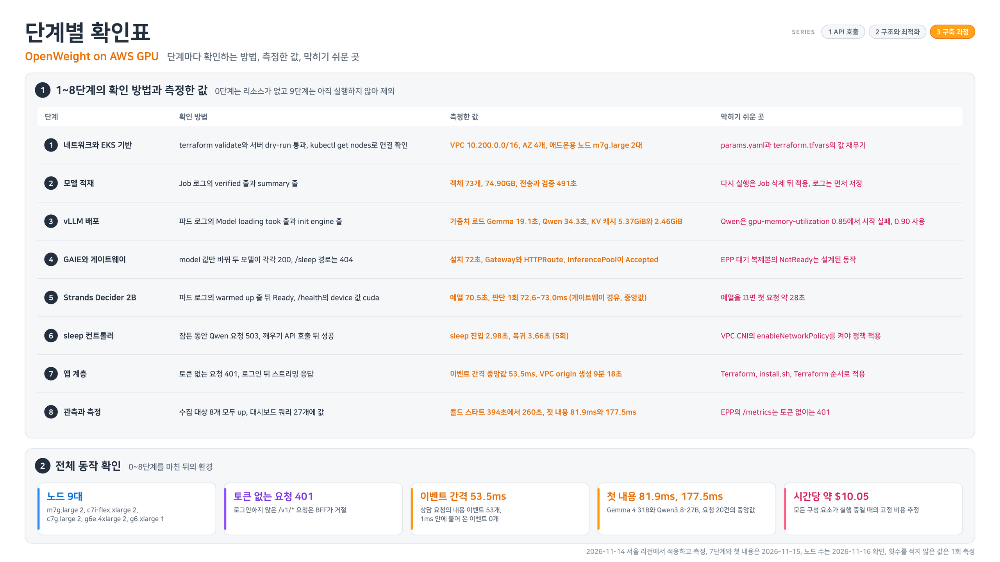
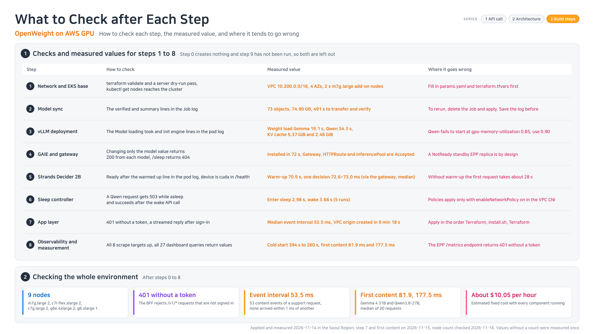

OpenWeight on AWS GPU 3부: 10개 단계로 따라 하는 구축 과정OpenWeight on AWS GPU, Part 3: Building the environment in ten steps
오픈 웨이트 모델 두 개를 서빙하는 환경은 어떤 순서로 만들고 단계마다 무엇을 확인해야 할까요? 이 환경은 VPC와 Amazon EKS, 모델 적재, vLLM, 게이트웨이, Strands Decider 2B, sleep 컨트롤러, 앱 계층, 관측의 순서로 만들었습니다. 단계마다 정한 확인을 마친 뒤 다음 단계로 넘어갔습니다. 9단계인 정리는 아직 실행하지 않아 계획한 순서만 적었습니다.In what order do you build an environment that serves two open-weight models, and what do you check after each step? This one was built in the order VPC and Amazon EKS, model sync, vLLM, the gateway, Strands Decider 2B, the sleep controller, the app layer and observability, and each step moved on only after its checks passed. Step 9, cleanup, has not been run yet, so only the planned order is given.
- 도구의 범위: AWS CDK는 VPC를, Terraform은 Amazon EKS와 계정 수준의 리소스를, kubectl과 Helm은 클러스터 안의 리소스를 맡습니다. 모든 적용은
terraform plan이나kubectl diff를 먼저 읽고 합니다.Scope of the tools: AWS CDK creates the VPC, Terraform creates Amazon EKS and the account-level resources, and kubectl and Helm apply the resources inside the cluster. Every apply comes after readingterraform planorkubectl diff. - 7단계의 순서: 내부 ALB를 AWS Load Balancer Controller가 만들기 때문에 Terraform,
k8s/bff/install.sh, Terraform의 순서로 적용합니다.Order inside step 7: the AWS Load Balancer Controller creates the internal ALB, so the order is Terraform,k8s/bff/install.sh, then Terraform again. - 단계별 확인: 모델 적재는 객체 73개와 491.4초, 가중치 로드는 19.1초와 34.3초, 게이트웨이 설치는 72초, Decider 2B 예열은 70.5초, sleep 복귀는 3.66초였습니다.Checks per step: model sync took 491.4 s for 73 objects, weight load 19.1 s and 34.3 s, the gateway install 72 s, Decider 2B warm-up 70.5 s and waking from sleep 3.66 s.
- 막히기 쉬운 곳: Qwen3.8-27B는
--gpu-memory-utilization0.85에서 시작하지 못해 0.90을 사용했습니다. NetworkPolicy는 VPC CNI의enableNetworkPolicy를 켜야 적용됩니다.Where it goes wrong: Qwen3.8-27B failed to start at--gpu-memory-utilization0.85 and uses 0.90, and NetworkPolicies take effect only withenableNetworkPolicyon in the VPC CNI. - 작게 시작하기: 3단계에서
k8s/gemma만 적용하면 GPU 노드 한 대와 모델 하나로 시작합니다.Starting smaller: applying onlyk8s/gemmain step 3 starts with one GPU node and one model.
두 모델이 답하는 로그인 페이지까지 10개 단계
0단계에서 8단계까지 마치면 로그인 페이지에서 요청을 보내고 두 모델의 답을 토큰 단위로 받습니다. 요청은 Amazon CloudFront, 내부 Application Load Balancer(ALB), BFF(Backend for Frontend), 게이트웨이를 차례로 지납니다. 그 끝에 GPU 노드의 vLLM 파드가 있습니다. BFF는 로그인 토큰을 검증하고 요청을 어느 모델로 보낼지 정하는 앱입니다. 이 경로가 요청 한 건을 처리하는 과정은 1부에, 구성 요소를 이렇게 둔 이유는 2부에 있습니다.
그림 1은 완성된 환경의 구성 요소마다 그것을 만드는 단계의 번호를 붙인 구조도입니다. 아래쪽 카드 10개가 이 글에서 따라갈 단계입니다.

이 글은 시리즈 "OpenWeight on AWS GPU(OW on GPU)"의 3부입니다. 이 시리즈는 오픈 웨이트 모델을 AWS의 GPU 인스턴스에서 직접 서빙하는 방법을 다룹니다. 오픈 웨이트 모델은 가중치가 공개되어 내려받아 직접 실행할 수 있는 모델입니다. 예제 환경은 Amazon Elastic Kubernetes Service(Amazon EKS)에서 오픈 소스 추론 엔진 vLLM으로 Gemma 4 31B와 Qwen3.8-27B를 함께 서빙합니다. 1부는 API 호출 한 건이 지나는 8개 단계를 따라갔습니다. 2부는 두 모델을 서빙하는 구조와 Amazon EKS 최적화를 설명했습니다.
3부는 이 환경을 처음부터 만드는 순서입니다. VPC를 만드는 것에서 시작해 로그인한 브라우저에 두 모델의 답이 스트리밍될 때까지를 10개 단계(0단계에서 9단계)로 나눴습니다. 단계마다 만드는 것, 명령, 확인 방법, 측정한 값, 막히기 쉬운 곳을 같은 순서로 적었습니다. 코드와 매니페스트는 공개 저장소 ow-on-gpu에 있으므로 저장소를 열어 두고 읽는 것을 권합니다. 본문의 값은 2026년 11월 14일과 15일에 서울 리전(ap-northeast-2)에서 측정했고 측정 횟수는 표에 적었습니다. 이 글은 Kubernetes와 AWS의 기본 개념(파드, Deployment, VPC, IAM)을 알고 LLM 서빙 환경을 처음 구축하는 엔지니어를 대상으로 합니다.
모든 구성 요소가 실행 중일 때 클러스터의 노드는 9대입니다.
| 노드 그룹 또는 NodePool | 인스턴스 | 대수 | 실행하는 것 |
|---|---|---|---|
| addons (관리형 노드 그룹) | m7g.large | 2 | Karpenter, CoreDNS, AWS Load Balancer Controller |
| system | c7i-flex.xlarge | 2 | 게이트웨이 계층, 지표 수집기 |
| app | c7g.large | 2 | BFF 파드 2개 |
| gemma-od, qwen-od | g6e.4xlarge (NVIDIA L40S 1장) | 2 | Gemma 4 31B, Qwen3.8-27B |
| decider | g6.xlarge (NVIDIA L4 1장) | 1 | Strands Decider 2B |
표 1. 완성된 환경의 노드 9대(2026년 11월 16일 확인). addons를 뺀 노드는 Karpenter가 NodePool의 조건에 맞춰 만듭니다.
01
준비물과 작업 규칙
시작하기 전에 계정의 할당량, 명령줄 도구, 비용을 확인합니다.
| 준비물 | 내용 |
|---|---|
| AWS 계정 | 서울 리전에서 g6e.4xlarge 2대와 g6.xlarge 1대를 실행할 수 있는 G 계열 On-Demand 할당량(36 vCPU) |
| 명령줄 도구 | AWS CLI, kubectl, Helm, Terraform 1.14 이상, Docker, Node.js와 npm |
| 저장소의 훅과 시험이 사용하는 도구 | jq, python3, Bash 4 이상 |
| 작업 장비 | arm64 이미지를 만들 수 있는 장비. BFF 이미지가 arm64입니다 |
| 비용 | 모든 구성 요소가 실행 중일 때 시간당 약 10.05 USD |
표 2. 준비물. 비용은 2026년 11월 15일 기준 고정 비용의 세전 USD 추정치이고 사용량에 따라 부과되는 요금은 포함하지 않았습니다.
GPU 노드는 실행 중인 동안 과금됩니다. 실습을 멈출 때 지우는 순서는 9단계에 적었습니다. 모든 단계는 저장소의 AGENT.md에 적힌 작업 규칙을 따릅니다.
- AWS 리소스를 만들거나 바꾸기 전에
terraform plan또는kubectl diff의 결과를 먼저 읽고 적용합니다. - CRD 필드, Helm values, vLLM 플래그는 설치한 버전에서 확인합니다.
kubectl explain,helm show values, 이미지 안의vllm serve --help를 사용합니다. - 자격 증명은 코드와 매니페스트에 넣지 않습니다. AWS 권한은 EKS Pod Identity로 연결한 IAM 역할로만 부여합니다. EKS Pod Identity는 파드의 ServiceAccount에 IAM 역할을 연결하는 Amazon EKS 기능입니다.
- 환경마다 다른 값이 든 파일 5개는 저장소에 없고 자리 표시만 든
*.example이 있습니다.
저장소 준비
git clone https://github.com/whchoi98/ow-on-gpu.git
cd ow-on-gpu
bash scripts/setup.sh
bash tests/run-all.shscripts/setup.sh는 AWS 리소스를 만들지 않습니다. 도구 확인, git 훅 설치, *.example 파일 복사, 확인용 페이지의 의존성 설치만 합니다. 복사된 파일의 자리 표시는 표 3의 값으로 바꿉니다. Terraform 출력에서 읽는 값은 1단계를 적용한 뒤에 채웁니다.
| 파일 | 채울 값 |
|---|---|
infra/terraform/terraform.tfvars | EKS API에 접근을 허용할 작업 장비의 공인 IP |
k8s/base/params.yaml, jobs/model-sync/params.env, bench/coldstart/k8s/storage-s3.yaml | 모델 버킷 이름. terraform -chdir=infra/terraform output -raw model_bucket |
k8s/observability/prometheus.yml | Prometheus 워크스페이스 ID. terraform -chdir=infra/terraform output -raw amp_workspace_id |
표 3. 환경마다 다른 값이 든 파일 5개와 채울 값.
02
AWS CDK, Terraform, kubectl로 나눈 10개 단계의 순서
도구는 맡는 범위가 나뉘어 있습니다. AWS CDK는 VPC를 만듭니다. Terraform은 그 VPC를 조회해 Amazon EKS와 계정 수준의 리소스를 만듭니다. kubectl과 Helm은 클러스터 안의 리소스를 적용합니다. 그림 2의 위쪽은 도구마다 어느 단계에서 무엇을 적용하는지입니다. 아래쪽은 순서가 가장 까다로운 7단계와 모든 단계에 공통인 적용 규칙입니다.

| 단계 | 만드는 것 | 도구 | 코드 |
|---|---|---|---|
| 0 | 버전 조합, 체크포인트, 할당량 확인 (리소스 없음) | AWS CLI | - |
| 1 | VPC, EKS, Karpenter, 모델 버킷, NodePool | AWS CDK, Terraform, kubectl | infra/cdk-vpc, infra/terraform, k8s/base |
| 2 | Amazon S3에 모델 4종 적재 | kubectl (Job) | jobs/model-sync |
| 3 | vLLM 파드 2개, compile 캐시 게시 | kubectl | k8s/gemma, k8s/qwen, jobs/cache-publish |
| 4 | 게이트웨이 계층 | Helm, kubectl | k8s/gateway |
| 5 | Strands Decider 2B | kubectl | k8s/decider |
| 6 | sleep 컨트롤러 | kubectl | k8s/sleep-controller |
| 7 | CloudFront, AWS WAF, Amazon Cognito, 내부 ALB, BFF | Terraform, kubectl, Docker | app/bff, app/web, k8s/bff, infra/terraform |
| 8 | 지표 수집과 측정 | kubectl, Python | k8s/observability, bench |
| 9 | 정리 (아직 실행하지 않음) | 계획만 있음 | - |
표 4. 10개 단계와 코드의 위치. 단계 번호는 그림 1의 원 안의 번호와 같습니다.
건물을 짓는 일에 비유하면 순서가 쉽게 읽힙니다. AWS CDK는 부지를 닦고 도로와 배관을 놓습니다(VPC와 서브넷, 엔드포인트). Terraform은 그 부지에 건물의 골조와 출입구를 세웁니다(Amazon EKS, IAM 역할, 모델 버킷, CloudFront). kubectl과 Helm은 건물 안에 설비를 들이고 입주시킵니다(NodePool, vLLM, 게이트웨이, BFF). 7단계에서 Terraform을 앞뒤로 두 번 적용하는 이유도 이 그림으로 설명됩니다. 건물 안쪽의 문(내부 ALB)은 입주한 설비(AWS Load Balancer Controller)가 달기 때문에, 문이 달린 뒤에야 바깥 진입로(CloudFront)를 그 문에 이을 수 있습니다. 비유와 다른 점도 있습니다. 건물의 방과 달리 GPU 노드는 미리 지어 두지 않습니다. 파드가 생길 때 Karpenter가 만듭니다.
단계의 순서는 의존 관계를 따릅니다. 뒤 단계의 스크립트는 앞 단계의 Terraform 출력을 읽습니다. 서빙 파드는 2단계가 Amazon S3에 올린 객체만 읽습니다. 아래부터는 단계마다 만드는 것, 명령, 확인 방법과 측정한 값, 막히기 쉬운 곳의 순서로 적습니다.
03
기반을 만드는 0단계에서 2단계
0단계 사전 확인
이 단계에서는 리소스를 만들지 않습니다. 버전 조합, 체크포인트, 서비스 할당량을 읽기 전용 조회로 확인합니다. 체크포인트는 학습된 가중치를 저장한 파일 묶음입니다. 확인한 내용은 docs/00-versions.md에 있습니다.
aws service-quotas list-service-quotas --service-code ec2 --region ap-northeast-2AZ별 제공 여부는 aws ec2 describe-instance-type-offerings --location-type availability-zone으로 조회했습니다.
| 확인한 것 | 값 |
|---|---|
| 버전 조합 | EKS 1.37, Karpenter v1.15.2, AWS Load Balancer Controller v3.6.3, Gateway API CRD v1.6.3, GAIE CRD v1.6.2, llm-d-router v1.0.0, agentgateway v1.7.0, vLLM v0.33.0 |
| 체크포인트 | Gemma 4 31B는 RedHatAI/gemma-4-31B-it-FP8-dynamic(33.30GB), Qwen3.8-27B는 AzatAI/Qwen3.8-27B-FP8-dynamic(36.80GB) |
| G 계열 On-Demand 할당량 | 이 계정은 768 vCPU. 이 구성에 필요한 양은 36 vCPU |
| AZ별 제공 | g6e.4xlarge는 2a와 2b, g6.xlarge는 2a, 2c, 2d |
표 5. 0단계에서 확인한 값(2026년 11월 14일 조회). 크기는 저장소 파일 크기의 합이고 1GB는 10^9바이트입니다.
막히기 쉬운 곳입니다.
- 최신 버전끼리도 지원 범위가 어긋납니다. Gateway API CRD는 최신 v1.7.0이 agentgateway 1.7.x의 지원 범위(1.4에서 1.6) 밖이어서 v1.6.3을 사용했습니다.
- 체크포인트는 GPU에 맞춰 고릅니다. L40S(Ada 세대)에는 vLLM 문서가 지원을 명시한 FP8 체크포인트를 골랐습니다. FP8은 가중치를 8비트 부동소수점으로 줄인 양자화 형식입니다. Qwen3.8-27B의 공식 block FP8은 CUTLASS 커널이 SM 9.0 이상에서만 지원되는데 L40S는 SM 8.9입니다. 그래서 per-channel FP8-dynamic을 사용했습니다.
1단계 네트워크와 EKS 기반
VPC는 AWS CDK 스택 EksVpcStack으로 만듭니다. 대역은 10.200.0.0/16이고 4개 AZ에 Public, Private, Isolated 서브넷을 두며 워크로드는 Private 서브넷에서 실행합니다. Terraform은 이 VPC를 조회해 EKS 1.37 클러스터, 애드온, Karpenter, AWS Load Balancer Controller, 모델 버킷, IAM 역할을 만듭니다. Karpenter는 대기 중인 파드의 요구에 맞는 노드를 만드는 오토스케일러입니다. NodePool은 Karpenter가 만들 노드의 조건을 적은 리소스입니다. k8s/base는 네임스페이스, NodePool 4개(gemma-od, qwen-od, decider, system), EC2NodeClass, NVIDIA device plugin을 적용합니다.
(cd infra/cdk-vpc && npx cdk deploy)
terraform -chdir=infra/terraform plan
terraform -chdir=infra/terraform apply
# 아래 명령은 kubeconfig를 만드는 명령을 출력합니다. 출력된 명령을 확인한 뒤 실행합니다
terraform -chdir=infra/terraform output -raw update_kubeconfig
export KUBECONFIG=$PWD/infra/terraform/.kubeconfig
kubectl apply -k k8s/base| 확인할 것 | 결과 |
|---|---|
terraform validate, kubectl apply --dry-run=server | 두 검사가 통과 |
kubectl get nodes | 클러스터에 연결됨. 애드온용 관리형 노드 그룹은 m7g.large 2대 |
| VPC | 10.200.0.0/16, AZ 4개 |
| GPU 노드 | 이 단계에서는 없음. 3단계와 5단계에서 파드가 생길 때 Karpenter가 만듦 |
표 6. 1단계의 확인 항목.
막히기 쉬운 곳입니다.
kubectl apply -k k8s/base전에k8s/base/params.yaml의 모델 버킷 이름을 Terraform 출력으로 채웁니다.- GPU NodePool에는 taint를 두고 NodePool마다 GPU를 1장까지만 허용합니다. 노드가 의도하지 않게 늘어나는 것을 막는 설정입니다.
- EC2NodeClass는 NVIDIA 드라이버가 든 EKS 최적화 AMI를 사용합니다. userData로 vLLM 이미지를 미리 받고 로컬 NVMe를 인스턴스 스토어로 사용합니다.
- kubectl은 프로젝트 전용 kubeconfig로 실행합니다. 공유 장비의 기본 컨텍스트를 바꾸지 않기 위해서입니다.
2단계 모델 적재
적재 Job이 Hugging Face의 저장소 4개를 Amazon S3의 모델 버킷에 올립니다. Gemma 4 31B, Qwen3.8-27B, 5단계에서 배포할 Strands Decider 2B, 그리고 그 기반 모델입니다. Job은 한 번만 실행하고 그 뒤로 서빙 파드는 Amazon S3에서만 읽습니다. 파일을 받는 대로 s5cmd pipe로 올려 가중치를 로컬 디스크에 쌓지 않습니다. 파일은 8개를 동시에 처리합니다.
kubectl apply -k jobs/model-sync
kubectl -n model-jobs logs -f job/model-sync
kubectl -n model-jobs wait --for=condition=complete job/model-sync --timeout=60m| 확인할 것 | 결과와 측정한 값 |
|---|---|
Job 로그의 verified 줄 | 저장소 4개의 객체 수와 크기가 기대값과 일치 |
Job 로그의 summary 줄 | 객체 73개, 74.90GB |
| 전송과 검증에 걸린 시간 | 491.4초 |
| Job 시작부터 완료까지 | 9분 8초 |
표 7. 2단계의 확인 항목과 측정한 값(2026년 11월 14일, 1회).
막히기 쉬운 곳입니다.
jobs/model-sync/params.env의BUCKET은 Terraform 출력model_bucket과 같아야 합니다.- 다시 실행하려면
kubectl -n model-jobs delete job model-sync로 Job을 지우고 적용합니다. Job의 파드 템플릿은 바꿀 수 없기 때문입니다. Job을 지우면 로그도 사라지므로 먼저 저장합니다. - 저장소는 리비전 해시로 고정했습니다. Job은 받으면서 계산한 해시를 Hugging Face가 알려 준 값과 비교합니다. 끝나면 S3의 객체 목록을 기대값과 비교하고 다르면 실패합니다.
04
모델을 서빙하는 3단계에서 6단계
3단계 vLLM 배포
Gemma 4 31B와 Qwen3.8-27B를 g6e.4xlarge 노드에 한 대씩 배포합니다. 이 단계에서 GPU 노드 2대가 뜹니다. 가중치는 runai_streamer 로더로 Amazon S3에서 직접 읽습니다. initContainer는 S3의 compile 캐시를 노드의 hostPath로 내려받습니다. compile 캐시는 vLLM이 엔진을 초기화할 때 만드는 torch.compile 결과물입니다. 첫 기동 뒤에는 캐시 게시 Job이 이 캐시를 S3에 올려 다음 기동이 사용하게 합니다.
kubectl diff -k k8s/gemma
kubectl apply -k k8s/gemma
kubectl apply -k k8s/qwen
kubectl apply -k jobs/cache-publish확인은 네임스페이스 inference에 있는 vLLM 파드(vllm-gemma, vllm-qwen)의 로그에서 합니다. 가중치 로드와 엔진 초기화가 끝나면 아래 두 줄이 나옵니다. Gemma 4 31B의 첫 기동에서 나온 값입니다.
Model loading took 30.63 GiB memory and 19.106861 seconds
init engine (profile, create kv cache, warmup model) took 95.84 s (compilation: 61.03 s)| 항목 | Gemma 4 31B | Qwen3.8-27B |
|---|---|---|
| 가중치 로드 | 19.1초 | 34.3초 |
| 가중치가 차지한 GPU 메모리 | 30.63GiB | 34.39GiB |
| KV 캐시 | 5.37GiB (34,052토큰) | 2.46GiB (42,780토큰) |
| 엔진 초기화 | 95.84초 (compile 캐시 없음) | 57.85초 (compile 캐시 적중) |
| 게시한 compile 캐시 | 객체 522개, 90.8MB | 객체 2,056개, 216.7MB |
표 8. 3단계에서 측정한 값(2026년 11월 14일, 첫 기동 1회). KV 캐시는 처리 중인 요청의 토큰별 중간 계산 결과를 담는 GPU 메모리입니다. Qwen3.8-27B의 2.46GiB는 이 첫 기동 로그의 값이고 2부의 처리량 측정 때 로그에는 2.45GiB로 기록됐습니다.
막히기 쉬운 곳입니다.
- 플래그는 이미지 안에서
vllm serve --help로 확인한 뒤 사용합니다. v0.33.0 이미지에 이 구성의 플래그 14개가 모두 있었습니다. - Qwen3.8-27B는
--gpu-memory-utilization0.85에서 KV 캐시에 0.24GiB만 남아 시작하지 못했고 0.90에서 시작했습니다.--max-num-seqs도 기본값 1024에서는 엔진이 시작하지 못해 32로 두었습니다. - Qwen3.8-27B의 readinessProbe는
/is_sleeping을 확인합니다./health는 잠든 동안에도 200을 반환하기 때문입니다. - compile 캐시의 S3 prefix에는 vLLM 버전, 모델, 정밀도, GPU 아키텍처를 넣습니다. 구성이 하나라도 바뀌면 새 prefix로 게시합니다.
4단계 GAIE와 게이트웨이
요청 본문의 model 값으로 모델별 파드 묶음을 고르는 게이트웨이 계층을 설치합니다. Gateway API Inference Extension(GAIE)은 추론 요청을 모델 서버 파드의 묶음인 InferencePool로 보내는 Gateway API 확장입니다. EPP(Endpoint Picker)는 풀 안에서 요청을 보낼 파드를 고릅니다. 게이트웨이 구현체는 agentgateway입니다. agentgateway가 본문의 model 값을 헤더로 옮기고 HTTPRoute가 그 헤더로 풀을 고릅니다.
k8s/gateway/install.sh render | kubectl diff -f -
k8s/gateway/install.sh applyapply는 CRD, agentgateway, 모델별 EPP와 InferencePool, Gateway를 순서대로 적용하고 72초 걸렸습니다. 표 9는 클러스터 안의 임시 파드에서 게이트웨이의 Service로 요청을 보낸 결과입니다.
| 확인할 것 | 결과 |
|---|---|
/v1/chat/completions, model이 gemma-4-31b | 200, Gemma 4 31B가 응답 |
/v1/chat/completions, model이 qwen38-27b | 200, Qwen3.8-27B가 응답 |
등록하지 않은 model 값 | 404 |
POST /sleep?level=1 | 404 |
| Gateway, HTTPRoute, InferencePool의 상태 | Accepted=True, ResolvedRefs=True |
표 9. 4단계의 확인 항목(2026년 11월 14일, 요청마다 1회).
막히기 쉬운 곳입니다.
- HTTPRoute에는
/v1/chat/completions와/v1/models만 등록합니다./sleep과/wake_up같은 관리 경로는 게이트웨이로 노출되지 않습니다. - EPP는 풀마다 2개지만 리더 하나만 요청을 처리합니다. 대기 복제본이 NotReady로 보이는 것은 설계된 동작입니다.
- 게이트웨이 파드 2개를 AZ 두 곳에 나누려면
topologySpreadConstraints에minDomains: 2와matchLabelKeys: [pod-template-hash]를 함께 둬야 했습니다. - 게이트웨이의 내부 Network Load Balancer(NLB)는 클러스터 밖의 배치 클라이언트용입니다. BFF는 게이트웨이의 Service를 직접 호출합니다.
5단계 Strands Decider 2B
Strands Decider 2B(이하 Decider 2B)는 요청을 읽고 어느 모델이 맡을지 판단하는 작은 모델입니다. BFF는 규칙과 업무 종류로 모델이 정해지지 않은 요청만 Decider 2B에 묻습니다. g6.xlarge 노드에 파드 하나로 배포합니다. 게이트웨이의 HTTPRoute가 POST /decide를 Decider 2B의 /v1/systemone으로 경로를 바꿔 보냅니다. InferencePool은 사용하지 않습니다. 서빙 컨테이너는 strands-decider 저장소의 SageMaker 배포 가이드가 사용하는 것과 같습니다.
kubectl apply -k k8s/decider| 확인할 것 | 결과와 측정한 값 |
|---|---|
| 파드 로그 | [strands-decider] warmed up in 70.5 s 뒤에 Ready |
/health 응답 | base_model이 /opt/ml/model/base, device가 cuda |
| 컨테이너 시작부터 Ready | 87초 (예열 포함) |
판단 1회, 게이트웨이 /decide 경유 | 중앙값 72.6ms에서 73.0ms (판단 종류마다 50회) |
표 10. 5단계의 확인 항목과 측정한 값(2026년 11월 14일).
막히기 쉬운 곳입니다.
- 예열이 끝날 때까지
/health가 실패하므로 파드는 예열 뒤에 Ready가 됩니다. 예열을 끄면 첫 요청 하나가 약 28초 걸렸습니다. - Decider 2B의 저장소에는 LoRA 어댑터와 헤드만 있습니다. 기반 모델은 2단계에서 S3에 함께 올렸습니다.
HF_HUB_OFFLINE=1로 Hugging Face 접근도 막았습니다. - 이미지 태그는 매주 다시 빌드되므로 다이제스트로 고정했습니다. 올리려면
k8s/decider/deployment.yaml의 다이제스트를 바꿉니다. - 이 서버에는 인증이 없습니다. ClusterIP Service와 게이트웨이의
/decide로만 닿게 둡니다.
6단계 sleep 컨트롤러
업무 시간 밖에 Qwen3.8-27B를 재우고 필요할 때 깨우는 구성입니다. vLLM의 sleep mode는 파드를 내리지 않고 GPU 메모리를 비우는 기능입니다. level 1 sleep은 가중치를 호스트 메모리에 둡니다. CronJob 2개가 평일 19:00에 재우고 08:30에 깨웁니다(Asia/Seoul). 깨우기 API는 POST /wake만 제공합니다. BFF가 Qwen3.8-27B로 갈 요청 앞에서 이 API를 호출합니다.
kubectl apply -k k8s/sleep-controller| 확인할 것 | 결과와 측정한 값 |
|---|---|
sleep 진입 (/sleep 응답까지) | 2.98초 |
| 복귀 (깨우기 API 응답까지) | 3.66초 |
| 깨우기 응답 뒤 게이트웨이 요청이 성공하기까지 | 1.34초에서 1.40초 |
| 잠든 동안 게이트웨이로 보낸 Qwen3.8-27B 요청 | 503 |
| 라벨 없는 파드에서 Qwen3.8-27B의 8000 포트와 깨우기 API로 보낸 요청 | 차단 |
표 11. 6단계의 확인 항목과 측정한 값(2026년 11월 14일, 시간은 5회 측정의 범위).
막히기 쉬운 곳입니다.
- NetworkPolicy는 Amazon VPC CNI 애드온의
enableNetworkPolicy를 켜야 적용됩니다. 기본값은 꺼짐이어서 그 전에는 정책을 만들어도 적용되지 않습니다. 설정은infra/terraform/eks.tf에 있습니다. - 재울 때는
/sleep?level=1&mode=wait를 호출합니다. 기본값abort는 진행 중인 요청을 끊습니다. - 잠든 파드는 NotReady가 되어 일반 Service에서 빠집니다. 관리 요청은 NotReady 파드의 주소도 반환하는 헤드리스 Service
vllm-qwen-admin으로 보냅니다. - 파드가 뜬 뒤 첫 sleep은 31.71초 걸렸고 그 뒤로는 2.98초였습니다. sleep을 한 번 거친 뒤 컨테이너 메모리는 60.4GiB였습니다.
05
사용자 경로와 관측을 만드는 7단계와 8단계
7단계 앱 계층
사용자가 닿는 앞단을 만듭니다. CloudFront와 AWS WAF, Amazon Cognito 사용자 풀, 확인용 페이지를 담는 S3 버킷, BFF 파드, 내부 ALB입니다. BFF는 네임스페이스 app의 파드 2개이고 Karpenter NodePool app이 만든 Graviton 노드(c7g.large) 2대에서 실행합니다. 웹 검색 도구도 BFF에 들어 있습니다. BFF의 IAM 역할에는 Amazon Bedrock AgentCore Web Search(이하 Web Search)를 호출하는 권한 하나만 있습니다. 호출 리전은 us-east-1입니다. 서울 리전에는 이 API가 없기 때문입니다.
내부 ALB는 Terraform이 아닌 AWS Load Balancer Controller가 Ingress에서 만듭니다. 그래서 그림 2의 아래쪽처럼 Terraform, k8s/bff/install.sh, Terraform의 순서로 적용합니다.
terraform -chdir=infra/terraform apply -target=aws_ecr_repository.bff
app/bff/build.sh
app/web/build.sh
terraform -chdir=infra/terraform plan
terraform -chdir=infra/terraform apply
k8s/bff/install.sh diff
k8s/bff/install.sh apply
terraform -chdir=infra/terraform apply
app/bff/create-user.sh <이메일>순서마다 이유가 있습니다. ECR 저장소가 있어야 app/bff/build.sh가 이미지를 올립니다. 이 스크립트는 arm64 이미지를 만들고 이미지 안에서 BFF 시험을 실행한 뒤 태그를 infra/terraform/bff.auto.tfvars에 적습니다. 가운데 terraform apply는 BFF의 역할과 Pod Identity 연결을 만듭니다. 파드가 만들어질 때 이 연결이 없으면 자격 증명이 주입되지 않아 웹 검색이 실패합니다. k8s/bff/install.sh apply가 NodePool, 파드, Ingress를 적용하면 컨트롤러가 내부 ALB를 만듭니다. 마지막 terraform apply는 그 ALB를 태그로 조회해 CloudFront의 VPC origin에 연결합니다.
| 확인할 것 | 결과와 측정한 값 |
|---|---|
kubectl -n app rollout status deploy/bff --timeout=300s | 파드 2개가 Ready |
토큰 없는 POST /v1/chat/completions | 401 |
| 로그인 토큰으로 보낸 상담 요청 | 200, 내용 이벤트 53개가 중앙값 53.5ms 간격으로 도착 |
| CloudFront VPC origin 생성 | 9분 18초 |
| 앱 계층의 고정 비용 | 시간당 0.1857 USD (내부 ALB 0.0225, c7g.large 2대 0.1632) |
표 12. 7단계의 확인 항목과 측정한 값(2026년 11월 15일, 요청마다 1회). 금액은 세전 USD이고 사용량에 따라 부과되는 요금은 포함하지 않았습니다.
막히기 쉬운 곳입니다.
- 스트리밍에 맞춰 타임아웃을 늘렸습니다. CloudFront 오리진 응답 타임아웃은 60초(기본 30초), ALB 유휴 제한 시간은 120초(기본 60초)입니다.
- BFF는 응답을 모으지 않고 받은 Chunk(한 번에 전송되는 응답 단위)를 그대로 전달합니다. 모아서 내보내면 스트리밍이 깨집니다.
- 가입은 막아 두었고 사용자는
create-user.sh로만 만듭니다. 비밀번호는 프롬프트나 환경 변수USER_PASSWORD로 받아 Amazon Cognito에만 저장합니다. k8s/bff/install.sh는 자기 디렉터리로 옮겨 가 실행하므로KUBECONFIG를 절대 경로로 지정합니다.
8단계 관측과 측정
지표를 Amazon Managed Service for Prometheus(AMP)로 모으고 측정 스크립트를 실행합니다. agent 모드의 Prometheus v3.16.0 하나가 vLLM 파드 2개, EPP 파드 4개, 게이트웨이 파드 2개를 수집해 AMP로 보냅니다. 측정은 콜드 스타트의 구간 분해, 구간별 첫 내용까지의 시간, SLO(서비스 수준 목표) 하 처리량, 우선순위 효과의 4가지이고 스크립트는 bench/ 아래에 있습니다. 부하 발생기는 측정 전용 NodePool bench에서 Job으로 실행합니다.
kubectl apply -k k8s/observability
python3 bench/coldstart/measure.py --model gemma --scenario cold-optimized --out results/2026-11-14-coldstart
python3 bench/job.py --name slo-gemma --service-account gemma --out results/2026-11-14-slo/gemma \
--env MODEL_NAME=gemma-4-31b --env MODEL_DIR=gemma-4-31B-it-FP8-dynamic \
--env BASE_URL=http://vllm-gemma.inference.svc:8000 -- bash /bench/run-bench.sh적용 전에 k8s/observability/prometheus.yml의 워크스페이스 ID를 Terraform 출력 amp_workspace_id로 채웁니다.
| 확인할 것 | 결과와 측정한 값 |
|---|---|
| 수집 대상 8개 | 모두 up |
대시보드 k8s/observability/dashboards/serving.json의 쿼리 27개 | 모두 값이 나옴 |
| Gemma 4 31B의 콜드 스타트 | 394초에서 260초 (기준 구성과 최적화 구성, 1회씩) |
| 사용자가 본 첫 내용까지의 시간 | Gemma 4 31B 81.9ms, Qwen3.8-27B 177.5ms (20건의 중앙값) |
| 배치 부하 중 상담 요청의 첫 토큰까지의 시간 | 30.9초에서 0.19초 (우선순위 없음과 엔진 우선순위, 60건의 중앙값) |
표 13. 8단계의 확인 항목과 측정한 값(2026년 11월 14일, 첫 내용까지의 시간은 11월 15일). 값의 뜻과 원인은 1부와 2부에서 설명했습니다.
막히기 쉬운 곳입니다.
- EPP의
/metrics는 토큰 없이는 401입니다. 수집기의 ServiceAccount 토큰과 ClusterRoleow-on-gpu-metrics-reader로 수집합니다. Qwen3.8-27B의 NetworkPolicy에도 수집기를 허용하는 항목을 더합니다. vllm bench serve는 GPU가 없는 노드에서 "Failed to infer device type"으로 시작하지 못합니다. 측정 파드는bench/slo/bench_serve.py로 같은 벤치마크 모듈을 직접 호출합니다.- 평일 19:00부터 08:30까지는 Qwen3.8-27B가 잠들어 있습니다. 그 시간대에 측정하려면 CronJob
qwen-sleep을 suspend합니다. - CloudFront 주소로 부하를 걸 때는 Terraform 변수
waf_rate_limit을 올리거나 측정 장비를 예외로 둡니다.
06
로그인부터 모델까지 전체 동작 확인
8단계까지 마쳤다면 노드 목록, 사이트 주소, 인증, 모델까지의 경로를 차례로 확인합니다.
export KUBECONFIG=$PWD/infra/terraform/.kubeconfig
kubectl get nodes -L node.kubernetes.io/instance-type,karpenter.sh/nodepool
terraform -chdir=infra/terraform output -raw app_url
python bench/bff/lang_check_live.py "$(terraform -chdir=infra/terraform output -raw app_url)"
kubectl -n app exec -i <bff-pod> -- python - < bench/bff/lang_check_in_pod.py노드 목록에는 표 1의 9대가 보입니다. 세 번째 명령이 출력하는 https://<cloudfront-domain> 주소를 열고 7단계에서 만든 사용자로 로그인한 뒤 요청을 보냅니다. 응답 헤더 x-bff-model, x-bff-decision, x-bff-search, x-bff-timing이 그 요청의 모델, 결정 근거, 웹 검색 여부, BFF 안의 구간 시간을 알려 줍니다. 헤더를 읽는 방법은 1부에 있습니다.
나머지 두 명령은 비밀번호 없이 실행하는 확인입니다. lang_check_live.py는 토큰 없는 요청이 401로 돌아오는지와 페이지 오류를 봅니다. lang_check_in_pod.py는 BFF 파드 안에서 같은 앱을 토큰 검증기만 바꿔 띄우고 요청을 실제 모델까지 보냅니다. 그림 3은 단계마다 확인한 것과 측정한 값을 한 장에 모은 확인표입니다.

07
증상으로 찾는 자주 막히는 곳
표 14는 이 환경을 만들면서 실제로 겪은 증상입니다. 오류 문구로 찾을 수 있게 증상을 먼저 적었습니다.
| 증상 | 원인 | 조치 | 단계 |
|---|---|---|---|
terraform plan이 helm_release.karpenter에서 실패 | -target 없이 전체를 plan하면 레지스트리 로그인에서 실패 | 변경 범위를 -target으로 좁힘 | 7 |
| Qwen3.8-27B 엔진이 시작하지 못하고 컨테이너가 다시 시작됨 | --gpu-memory-utilization 0.85에서 KV 캐시에 0.24GiB만 남음 | 0.90으로 올림 | 3 |
보안 그룹 교체가 couldn't find all security groups로 실패 | AWS Load Balancer Controller가 어노테이션의 이름을 Name 태그에서 찾음 | Terraform의 보안 그룹에 Name 태그를 붙임 | 7 |
| 배치 요청이 429로 거절됨 | batch의 priority가 -1이어서 풀이 포화되면 대기하지 않고 거절됨 | 배치 클라이언트의 재시도 간격을 늘림 | 4 |
| Decider 2B의 첫 요청이 약 28초 걸림 | 예열을 끈 구성에서 첫 요청이 컴파일 시간을 떠안음 | 예열을 켜 둠(기본값) | 5 |
| 게이트웨이로 보낸 Qwen3.8-27B 요청이 503 | Qwen3.8-27B가 잠들어 엔드포인트에서 빠짐 | 깨우기 API를 먼저 호출. BFF는 이 순서로 호출함 | 6 |
| NetworkPolicy를 만들어도 차단되지 않음 | VPC CNI의 enableNetworkPolicy가 꺼져 있음 | 애드온 설정에서 켬 | 6 |
k8s/bff/install.sh가 localhost:8080에 연결하려다 실패 | KUBECONFIG가 상대 경로 | 절대 경로로 지정 | 7 |
kubectl diff에 작성하지 않은 줄이 보임 | 서버 dry-run이라 클러스터의 웹훅이 더하는 줄까지 보임 | 적용하지 않고 무엇이 더하는지 먼저 확인 | 모든 단계 |
| CloudFront 주소의 요청이 모두 403 | AWS WAF 속도 제한(IP당 5분 300회)을 넘김 | 한동안 기다리거나 waf_rate_limit을 올림 | 7, 8 |
| AMP에 보낸 쿼리가 403 | PromQL을 GET의 쿼리 문자열로 보내면 서명이 맞지 않음 | 본문(POST)으로 보냄 | 8 |
표 14. 증상별 원인과 조치. 단계는 그 증상을 만나는 단계입니다.
08
9단계 정리 계획과 작게 시작하는 순서
정리는 아직 실행하지 않았습니다. 아래는 계획한 순서이고 실행 결과가 아닙니다.
- GPU 노드가 먼저 사라지도록 Deployment와 NodePool을 지웁니다.
terraform destroy를 실행합니다.- S3의
models와vllm-cacheprefix는 기본으로 남깁니다. 별도 플래그를 줬을 때만 지웁니다. - 남은 EC2, NLB, ALB, CloudFront 리소스를 조회해 확인합니다.
- VPC는 CDK 스택이므로 따로 지웁니다.
지울 때 지킬 규칙이 하나 있습니다. 서로 참조하는 보안 그룹은 참조하는 쪽의 규칙을 먼저 고친 뒤 지웁니다. 순서가 반대면 삭제가 DependencyViolation으로 실패합니다.
10개 단계를 한 번에 끝까지 갈 필요는 없습니다. 각 단계는 그 단계의 확인을 마친 뒤 다음 단계로 넘어갔으므로, 어느 단계에서 멈춰도 그때까지 만든 것은 표 15처럼 동작했습니다.
| 여기까지 만들면 | 사용할 수 있는 것 | 더하지 않은 것 |
|---|---|---|
| 3단계 | 클러스터 안에서 모델별 Service의 OpenAI 호환 API | 하나의 엔드포인트, 로그인, 지표 |
| 4단계 | 게이트웨이 하나에 model 값만 바꿔 두 모델을 호출 | 모델을 대신 골라 주는 계층, 로그인 |
| 5단계와 6단계 | 모델 판단을 맡는 Decider 2B, Qwen3.8-27B의 sleep과 깨우기 | 사용자가 닿는 경로 |
| 7단계 | 로그인한 브라우저에서 CloudFront 주소로 받는 스트리밍 응답 | 지표와 대시보드 |
| 8단계 | 지표 대시보드와 측정 스크립트 | 정리 |
표 15. 단계별로 사용할 수 있는 것. 각 단계가 끝난 시점에 그 단계의 확인 항목으로 본 범위입니다.
처음이라면 3단계에서 k8s/gemma만 적용해 모델 하나가 응답하는 것부터 확인하는 것을 권합니다. 이때는 Gemma 4 31B 파드 하나만 GPU를 요청하므로 Karpenter가 만드는 GPU 노드도 gemma-od NodePool의 한 대입니다. 두 모델을 하나의 엔드포인트로 묶을 필요가 생기면 4단계를, 사용자에게 공개할 때 7단계를 더합니다.
이 환경에 다음으로 더할 일은 3가지입니다. 9단계 정리를 실행해 스크립트로 남기는 것, 한 번씩 측정한 값을 반복해 편차를 확인하는 것, EPP와 게이트웨이 파드가 내려갔을 때의 동작을 시험하는 것입니다.
Ten steps to a signed-in page answered by two models
After steps 0 to 8 you send a request from a sign-in page and receive the answers of two models token by token. The request passes Amazon CloudFront, an internal Application Load Balancer (ALB), the BFF (Backend for Frontend) and the gateway in that order. The vLLM pods on the GPU nodes are at the end. The BFF is the app that verifies the sign-in token and decides which model a request goes to. How this path handles one request is in Part 1, and why the components are arranged this way is in Part 2.
Figure 1 is the architecture of the finished environment with the number of the step that builds each component. The ten cards at the bottom are the steps this post follows.
![The architecture of the finished environment with the build step on each component. On the request path CloudFront, the internal ALB, the BFF, Cognito and the S3 pages come from step 7, the gateway from step 4, Decider 2B from step 5 and the wake API from step 6. Gemma 4 31B, Qwen3.8-27B and the compile cache on the GPU nodes come from step 3, the S3 model bucket, Pod Identity and the Karpenter NodePools from step 1, the model sync Job from step 2 and AMP from step 8. Cards at the bottom list steps 0 to 9 with their names and tools.](eks-vllm-two-models-part-3-assets/fig01-build-map-en.png)
This post is Part 3 of the series "OpenWeight on AWS GPU (OW on GPU)". The series covers how to serve open-weight models yourself on AWS GPU instances. An open-weight model is a model whose weights are published, so you can download and run it yourself. The example environment serves Gemma 4 31B and Qwen3.8-27B together with vLLM, an open source inference engine, on Amazon Elastic Kubernetes Service (Amazon EKS). Part 1 followed the eight stages one API call goes through. Part 2 explained the architecture for serving two models and the Amazon EKS optimizations.
Part 3 is the order in which to build this environment from the start. It runs from creating the VPC to the moment the answers of two models stream into a signed-in browser, split into ten steps (step 0 to step 9). Each step is written in the same order: what it creates, the commands, how to check it, the measured values, and where it tends to go wrong. The code and manifests are in the public repository ow-on-gpu, so it helps to read with the repository open. The values were measured on November 14 and 15, 2026, in the Seoul Region (ap-northeast-2), and the tables give the number of runs. The post is written for engineers who know the basics of Kubernetes and AWS (pods, Deployments, VPC, IAM) and are building an LLM serving environment for the first time.
With every component running, the cluster has 9 nodes.
| Node group or NodePool | Instance | Count | What runs on it |
|---|---|---|---|
| addons (managed node group) | m7g.large | 2 | Karpenter, CoreDNS, AWS Load Balancer Controller |
| system | c7i-flex.xlarge | 2 | The gateway layer, the metrics collector |
| app | c7g.large | 2 | 2 BFF pods |
| gemma-od, qwen-od | g6e.4xlarge (1 NVIDIA L40S) | 2 | Gemma 4 31B, Qwen3.8-27B |
| decider | g6.xlarge (1 NVIDIA L4) | 1 | Strands Decider 2B |
Table 1. The 9 nodes of the finished environment (checked November 16, 2026). Except for addons, Karpenter creates the nodes to match the NodePools.
01
What you need and the working rules
Before you start, check the quota of the account, the command line tools and the cost.
| What you need | Details |
|---|---|
| AWS account | A G instance On-Demand quota that can run two g6e.4xlarge and one g6.xlarge in the Seoul Region (36 vCPU) |
| Command line tools | AWS CLI, kubectl, Helm, Terraform 1.14 or later, Docker, Node.js and npm |
| Tools used by the hooks and tests of the repository | jq, python3, Bash 4 or later |
| Workstation | A machine that can build arm64 images. The BFF image is arm64 |
| Cost | About 10.05 USD per hour with every component running |
Table 2. What you need. The cost is a pre-tax USD estimate of the fixed cost as of November 15, 2026, and it leaves out charges that depend on usage.
GPU nodes are billed while they run. The order for deleting things when you stop is in step 9. Every step follows the working rules written in AGENT.md of the repository.
- Before creating or changing an AWS resource, read the result of
terraform planorkubectl diff, then apply. - Check CRD fields, Helm values and vLLM flags against the installed version, with
kubectl explain,helm show valuesandvllm serve --helpinside the image. - Do not put credentials in code or manifests. AWS permissions are granted only through IAM roles attached with EKS Pod Identity. EKS Pod Identity is the Amazon EKS feature that attaches an IAM role to the ServiceAccount of a pod.
- Five files with values that differ per environment are not in the repository. Only
*.examplefiles with placeholders are.
Preparing the repository
git clone https://github.com/whchoi98/ow-on-gpu.git
cd ow-on-gpu
bash scripts/setup.sh
bash tests/run-all.shscripts/setup.sh creates no AWS resources. It only checks the tools, installs the git hooks, copies the *.example files and installs the dependencies of the check page. Replace the placeholders in the copied files with the values in Table 3. Fill in the values that come from Terraform outputs after you apply step 1.
| File | Value to fill in |
|---|---|
infra/terraform/terraform.tfvars | The public IP of the workstation allowed to reach the EKS API |
k8s/base/params.yaml, jobs/model-sync/params.env, bench/coldstart/k8s/storage-s3.yaml | The model bucket name. terraform -chdir=infra/terraform output -raw model_bucket |
k8s/observability/prometheus.yml | The Prometheus workspace ID. terraform -chdir=infra/terraform output -raw amp_workspace_id |
Table 3. The five files with values that differ per environment, and what to fill in.
02
The order of the ten steps across AWS CDK, Terraform and kubectl
Each tool has its own scope. AWS CDK creates the VPC. Terraform looks up that VPC and creates Amazon EKS and the account-level resources. kubectl and Helm apply the resources inside the cluster. The top of Figure 2 shows what each tool applies in which step. The bottom shows step 7, where the order is the hardest to get right, and the apply rules common to every step.

| Step | What it creates | Tools | Code |
|---|---|---|---|
| 0 | Checks of the version matrix, checkpoints and quotas (no resources) | AWS CLI | - |
| 1 | VPC, EKS, Karpenter, model bucket, NodePools | AWS CDK, Terraform, kubectl | infra/cdk-vpc, infra/terraform, k8s/base |
| 2 | Four models loaded into Amazon S3 | kubectl (Job) | jobs/model-sync |
| 3 | Two vLLM pods, compile cache publish | kubectl | k8s/gemma, k8s/qwen, jobs/cache-publish |
| 4 | The gateway layer | Helm, kubectl | k8s/gateway |
| 5 | Strands Decider 2B | kubectl | k8s/decider |
| 6 | The sleep controller | kubectl | k8s/sleep-controller |
| 7 | CloudFront, AWS WAF, Amazon Cognito, internal ALB, BFF | Terraform, kubectl, Docker | app/bff, app/web, k8s/bff, infra/terraform |
| 8 | Metrics collection and measurement | kubectl, Python | k8s/observability, bench |
| 9 | Cleanup (not run yet) | Plan only | - |
Table 4. The ten steps and where the code is. The step numbers are the numbers in the circles of Figure 1.
Think of it as constructing a building, and the order becomes easy to read. AWS CDK levels the site and lays the roads and pipes (the VPC, subnets and endpoints). Terraform puts up the frame and the entrances of the building on that site (Amazon EKS, IAM roles, the model bucket, CloudFront). kubectl and Helm bring the equipment into the building and move the tenants in (NodePools, vLLM, the gateway, the BFF). The same picture explains why step 7 applies Terraform twice, before and after. The inner door (the internal ALB) is installed by equipment that has already moved in (the AWS Load Balancer Controller), so the outside driveway (CloudFront) can be connected to that door only after the door exists. The analogy breaks in one place. Unlike the rooms of a building, GPU nodes are not built in advance. Karpenter creates them when pods appear.
The order of the steps follows their dependencies. The scripts of a later step read the Terraform outputs of an earlier step. The serving pods read only the objects that step 2 loaded into Amazon S3. From here on, each step is written in the order what it creates, the commands, the checks and measured values, and where it tends to go wrong.
03
Steps 0 to 2 lay the base
Step 0: Preflight
This step creates no resources. It checks the version matrix, the checkpoints and the service quotas with read-only queries. A checkpoint is the set of files that stores trained weights. What was checked is in docs/00-versions.md.
aws service-quotas list-service-quotas --service-code ec2 --region ap-northeast-2Availability by AZ was queried with aws ec2 describe-instance-type-offerings --location-type availability-zone.
| What was checked | Value |
|---|---|
| Version matrix | EKS 1.37, Karpenter v1.15.2, AWS Load Balancer Controller v3.6.3, Gateway API CRD v1.6.3, GAIE CRD v1.6.2, llm-d-router v1.0.0, agentgateway v1.7.0, vLLM v0.33.0 |
| Checkpoints | RedHatAI/gemma-4-31B-it-FP8-dynamic (33.30 GB) for Gemma 4 31B, AzatAI/Qwen3.8-27B-FP8-dynamic (36.80 GB) for Qwen3.8-27B |
| G instance On-Demand quota | 768 vCPU in this account. This setup needs 36 vCPU |
| Availability by AZ | g6e.4xlarge in 2a and 2b, g6.xlarge in 2a, 2c and 2d |
Table 5. Values checked in step 0 (queried November 14, 2026). Sizes are the sum of the file sizes in the repository, and 1 GB is 10^9 bytes.
Where it tends to go wrong:
- Even the latest versions do not always fall inside each other's supported range. For the Gateway API CRDs the latest v1.7.0 is outside the range agentgateway 1.7.x supports (1.4 to 1.6), so v1.6.3 was used.
- Pick the checkpoint for the GPU. For the L40S (Ada generation) the FP8 checkpoints that the vLLM docs list as supported were chosen. FP8 is a quantization format that reduces weights to 8-bit floating point. The CUTLASS kernel of the official block FP8 checkpoint of Qwen3.8-27B is supported only on SM 9.0 and later, and the L40S is SM 8.9. That is why the per-channel FP8-dynamic checkpoint was used.
Step 1: Network and EKS base
The VPC comes from the AWS CDK stack EksVpcStack. Its range is 10.200.0.0/16, it has public, private and isolated subnets in four AZs, and workloads run in the private subnets. Terraform looks up this VPC and creates the EKS 1.37 cluster, the add-ons, Karpenter, the AWS Load Balancer Controller, the model bucket and the IAM roles. Karpenter is an autoscaler that creates nodes to fit the pods that are waiting. A NodePool is the resource that states the conditions for the nodes Karpenter may create. k8s/base applies the namespaces, four NodePools (gemma-od, qwen-od, decider, system), the EC2NodeClass and the NVIDIA device plugin.
(cd infra/cdk-vpc && npx cdk deploy)
terraform -chdir=infra/terraform plan
terraform -chdir=infra/terraform apply
# The next command prints the command that creates the kubeconfig. Read the printed command, then run it
terraform -chdir=infra/terraform output -raw update_kubeconfig
export KUBECONFIG=$PWD/infra/terraform/.kubeconfig
kubectl apply -k k8s/base| What to check | Result |
|---|---|
terraform validate, kubectl apply --dry-run=server | Both checks pass |
kubectl get nodes | The cluster is reachable. The managed node group for add-ons has 2 m7g.large nodes |
| VPC | 10.200.0.0/16, 4 AZs |
| GPU nodes | None in this step. Karpenter creates them when pods appear in steps 3 and 5 |
Table 6. Checks for step 1.
Where it tends to go wrong:
- Before
kubectl apply -k k8s/base, fill in the model bucket name ink8s/base/params.yamlfrom the Terraform output. - The GPU NodePools carry a taint and allow at most 1 GPU each. This setting keeps the number of nodes from growing unintentionally.
- The EC2NodeClass uses the EKS optimized AMI with the NVIDIA drivers. Its userData pre-pulls the vLLM image, and the local NVMe is used as instance store.
- Run kubectl with the project kubeconfig, so the default context of a shared machine does not change.
Step 2: Model sync
A sync Job loads four Hugging Face repositories into the model bucket in Amazon S3. They are Gemma 4 31B, Qwen3.8-27B, Strands Decider 2B, which step 5 deploys, and its base model. The Job runs once, and after that the serving pods read only from Amazon S3. It uploads each file with s5cmd pipe as it downloads, so weights are not staged on local disk. It handles 8 files at a time.
kubectl apply -k jobs/model-sync
kubectl -n model-jobs logs -f job/model-sync
kubectl -n model-jobs wait --for=condition=complete job/model-sync --timeout=60m| What to check | Result and measured value |
|---|---|
The verified lines in the Job log | Object counts and sizes of the four repositories match the expected values |
The summary line in the Job log | 73 objects, 74.90 GB |
| Time to transfer and verify | 491.4 s |
| From Job start to completion | 9 min 8 s |
Table 7. Checks and measured values for step 2 (November 14, 2026, one run).
Where it tends to go wrong:
BUCKETinjobs/model-sync/params.envmust equal the Terraform outputmodel_bucket.- To run it again, delete the Job with
kubectl -n model-jobs delete job model-syncand apply. The pod template of a Job cannot be changed. Deleting the Job also deletes its log, so save the log first. - The repositories are pinned by revision hash. The Job compares the hashes it computes during download with the values from Hugging Face. At the end it compares the S3 object listing with the expected values and fails if they differ.
04
Steps 3 to 6 serve the models
Step 3: vLLM deployment
Gemma 4 31B and Qwen3.8-27B are each deployed on their own g6e.4xlarge node. Two GPU nodes start in this step. Weights are read directly from Amazon S3 with the runai_streamer loader. An initContainer downloads the compile cache from S3 to a hostPath on the node. The compile cache is the torch.compile output that vLLM produces while it initializes the engine. After the first start, a cache publish Job uploads this cache to S3 so the next start can use it.
kubectl diff -k k8s/gemma
kubectl apply -k k8s/gemma
kubectl apply -k k8s/qwen
kubectl apply -k jobs/cache-publishThe check is in the logs of the vLLM pods (vllm-gemma, vllm-qwen) in the inference namespace. When weight loading and engine initialization finish, the two lines below appear. These values are from the first start of Gemma 4 31B.
Model loading took 30.63 GiB memory and 19.106861 seconds
init engine (profile, create kv cache, warmup model) took 95.84 s (compilation: 61.03 s)| Item | Gemma 4 31B | Qwen3.8-27B |
|---|---|---|
| Weight load | 19.1 s | 34.3 s |
| GPU memory taken by the weights | 30.63 GiB | 34.39 GiB |
| KV cache | 5.37 GiB (34,052 tokens) | 2.46 GiB (42,780 tokens) |
| Engine initialization | 95.84 s (no compile cache) | 57.85 s (compile cache hit) |
| Compile cache published | 522 objects, 90.8 MB | 2,056 objects, 216.7 MB |
Table 8. Values measured in step 3 (November 14, 2026, first start, one run). The KV cache is the GPU memory that holds the per-token intermediate results of the requests being processed. The 2.46 GiB of Qwen3.8-27B is the value in this first start log; the log read 2.45 GiB during the throughput measurements in Part 2.
Where it tends to go wrong:
- Check flags with
vllm serve --helpinside the image before using them. All 14 flags of this setup were present in the v0.33.0 image. - Qwen3.8-27B failed to start at
--gpu-memory-utilization0.85, which left only 0.24 GiB for the KV cache, and started at 0.90. With the default--max-num-seqsof 1024 the engine also failed to start, so it is set to 32. - The readinessProbe of Qwen3.8-27B checks
/is_sleeping, because/healthstill returns 200 while the model is asleep. - The S3 prefix of the compile cache includes the vLLM version, the model, the precision and the GPU architecture. If any part of the setup changes, publish to a new prefix.
Step 4: GAIE and the gateway
This step installs the gateway layer that picks the pod group of a model from the model value in the request body. Gateway API Inference Extension (GAIE) is the Gateway API extension that sends inference requests to an InferencePool, a group of model server pods. The EPP (Endpoint Picker) chooses the pod inside the pool that receives the request. The gateway implementation is agentgateway. agentgateway copies the model value of the body into a header, and an HTTPRoute picks the pool by that header.
k8s/gateway/install.sh render | kubectl diff -f -
k8s/gateway/install.sh applyapply applies the CRDs, agentgateway, the EPP and InferencePool of each model and the Gateway in order, and it took 72 s. Table 9 shows requests sent from a temporary pod inside the cluster to the Service of the gateway.
| What to check | Result |
|---|---|
/v1/chat/completions with model set to gemma-4-31b | 200, Gemma 4 31B answers |
/v1/chat/completions with model set to qwen38-27b | 200, Qwen3.8-27B answers |
A model value that is not registered | 404 |
POST /sleep?level=1 | 404 |
| Status of the Gateway, HTTPRoutes and InferencePools | Accepted=True, ResolvedRefs=True |
Table 9. Checks for step 4 (November 14, 2026, one request each).
Where it tends to go wrong:
- The HTTPRoutes register only
/v1/chat/completionsand/v1/models. Admin paths such as/sleepand/wake_upare not exposed through the gateway. - Each pool has 2 EPP replicas, but only the leader handles requests. A standby replica that shows NotReady is by design.
- To spread the 2 gateway pods across two AZs,
topologySpreadConstraintsneeded bothminDomains: 2andmatchLabelKeys: [pod-template-hash]. - The internal Network Load Balancer (NLB) of the gateway is for batch clients outside the cluster. The BFF calls the Service of the gateway directly.
Step 5: Strands Decider 2B
Strands Decider 2B (Decider 2B below) is a small model that reads a request and judges which model should take it. The BFF asks Decider 2B only for requests whose model is not settled by the rules or the task type. It is deployed as one pod on a g6.xlarge node. An HTTPRoute of the gateway rewrites POST /decide to /v1/systemone of Decider 2B. No InferencePool is used. The serving container is the one the SageMaker deployment guide in the strands-decider repository uses.
kubectl apply -k k8s/decider| What to check | Result and measured value |
|---|---|
| Pod log | Ready after [strands-decider] warmed up in 70.5 s |
/health response | base_model is /opt/ml/model/base, device is cuda |
| From container start to Ready | 87 s (warm-up included) |
One decision through /decide on the gateway | Median 72.6 ms to 73.0 ms (50 runs per decision type) |
Table 10. Checks and measured values for step 5 (November 14, 2026).
Where it tends to go wrong:
/healthfails until warm-up finishes, so the pod becomes Ready after warm-up. With warm-up turned off, the very first request took about 28 s.- The Decider 2B repository holds only a LoRA adapter and a head. The base model was loaded into S3 in step 2 as well.
HF_HUB_OFFLINE=1also blocks access to Hugging Face. - The image tag is rebuilt every week, so the image is pinned by digest. To move to a newer build, change the digest in
k8s/decider/deployment.yaml. - This server has no authentication. Keep it reachable only through the ClusterIP Service and
/decideon the gateway.
Step 6: Sleep controller
This setup puts Qwen3.8-27B to sleep outside business hours and wakes it when needed. Sleep mode in vLLM frees GPU memory without taking the pod down. Level 1 sleep keeps the weights in host memory. Two CronJobs put the model to sleep at 19:00 and wake it at 08:30 on weekdays (Asia/Seoul). The wake API serves only POST /wake. The BFF calls this API before a request that goes to Qwen3.8-27B.
kubectl apply -k k8s/sleep-controller| What to check | Result and measured value |
|---|---|
Entering sleep (until /sleep responds) | 2.98 s |
| Waking (until the wake API responds) | 3.66 s |
| From the wake response until a gateway request succeeds | 1.34 s to 1.40 s |
| A Qwen3.8-27B request sent through the gateway while asleep | 503 |
| Requests from a pod without labels to port 8000 of Qwen3.8-27B and to the wake API | Blocked |
Table 11. Checks and measured values for step 6 (November 14, 2026, times are the range of 5 runs).
Where it tends to go wrong:
- NetworkPolicies take effect only with
enableNetworkPolicyturned on in the Amazon VPC CNI add-on. The default is off, so before that a policy can exist and still not be enforced. The setting is ininfra/terraform/eks.tf. - Put the model to sleep with
/sleep?level=1&mode=wait. The defaultabortcuts off requests in progress. - A sleeping pod becomes NotReady and drops out of the regular Service. Admin requests go to the headless Service
vllm-qwen-admin, which also returns the addresses of NotReady pods. - The first sleep after the pod started took 31.71 s, and 2.98 s after that. After one sleep, the container memory was 60.4 GiB.
05
Steps 7 and 8 add the user path and observability
Step 7: App layer
This step creates the front end that users reach: CloudFront and AWS WAF, the Amazon Cognito user pool, the S3 bucket for the check page, the BFF pods and the internal ALB. The BFF is 2 pods in the app namespace and runs on 2 Graviton nodes (c7g.large) created by the Karpenter NodePool app. The web search tool is part of the BFF. The IAM role of the BFF has a single permission, to call Amazon Bedrock AgentCore Web Search (Web Search below). The call goes to us-east-1, because this API is not offered in the Seoul Region.
The internal ALB is created by the AWS Load Balancer Controller from an Ingress, not by Terraform. So, as the bottom of Figure 2 shows, the order is Terraform, k8s/bff/install.sh, then Terraform again.
terraform -chdir=infra/terraform apply -target=aws_ecr_repository.bff
app/bff/build.sh
app/web/build.sh
terraform -chdir=infra/terraform plan
terraform -chdir=infra/terraform apply
k8s/bff/install.sh diff
k8s/bff/install.sh apply
terraform -chdir=infra/terraform apply
app/bff/create-user.sh <email>Each position in the order has a reason. app/bff/build.sh can push the image only when the ECR repository exists. The script builds an arm64 image, runs the BFF tests inside the image and writes the tag to infra/terraform/bff.auto.tfvars. The terraform apply in the middle creates the BFF role and its Pod Identity association. If the association is missing when a pod is created, no credentials are injected and web search fails. When k8s/bff/install.sh apply applies the NodePool, the pods and the Ingress, the controller creates the internal ALB. The last terraform apply looks up that ALB by tag and connects it to the VPC origin of CloudFront.
| What to check | Result and measured value |
|---|---|
kubectl -n app rollout status deploy/bff --timeout=300s | 2 pods Ready |
POST /v1/chat/completions without a token | 401 |
| A support request sent with a sign-in token | 200, 53 content events arriving at a median interval of 53.5 ms |
| Creating the CloudFront VPC origin | 9 min 18 s |
| Fixed cost of the app layer | 0.1857 USD per hour (internal ALB 0.0225, two c7g.large 0.1632) |
Table 12. Checks and measured values for step 7 (November 15, 2026, one request each). Amounts are pre-tax USD and leave out charges that depend on usage.
Where it tends to go wrong:
- The timeouts were raised for streaming. The CloudFront origin response timeout is 60 s (default 30 s) and the ALB idle timeout is 120 s (default 60 s).
- The BFF does not buffer the response. It passes each chunk (the unit of response sent at one time) on as it arrives. Buffering breaks streaming.
- Sign-up is disabled, and users are created only with
create-user.sh. The password comes from a prompt or the environment variableUSER_PASSWORDand is stored only in Amazon Cognito. k8s/bff/install.shchanges into its own directory before it runs, so giveKUBECONFIGas an absolute path.
Step 8: Observability and measurement
This step collects metrics in Amazon Managed Service for Prometheus (AMP) and runs the measurement scripts. One Prometheus v3.16.0 in agent mode scrapes 2 vLLM pods, 4 EPP pods and 2 gateway pods and writes to AMP. There are four measurements, the cold start breakdown, the time to first content by segment, throughput under the SLO (service level objective) and the effect of priority, and the scripts are under bench/. The load generator runs as a Job on the dedicated NodePool bench.
kubectl apply -k k8s/observability
python3 bench/coldstart/measure.py --model gemma --scenario cold-optimized --out results/2026-11-14-coldstart
python3 bench/job.py --name slo-gemma --service-account gemma --out results/2026-11-14-slo/gemma \
--env MODEL_NAME=gemma-4-31b --env MODEL_DIR=gemma-4-31B-it-FP8-dynamic \
--env BASE_URL=http://vllm-gemma.inference.svc:8000 -- bash /bench/run-bench.shBefore applying, fill in the workspace ID in k8s/observability/prometheus.yml from the Terraform output amp_workspace_id.
| What to check | Result and measured value |
|---|---|
| The 8 scrape targets | All up |
The 27 queries of the dashboard k8s/observability/dashboards/serving.json | All return values |
| Cold start of Gemma 4 31B | 394 s to 260 s (baseline and optimized, one run each) |
| Time to the first content the user sees | Gemma 4 31B 81.9 ms, Qwen3.8-27B 177.5 ms (median of 20 requests) |
| Time to first token of support requests under batch load | 30.9 s to 0.19 s (no priority and engine priority, median of 60 requests) |
Table 13. Checks and measured values for step 8 (November 14, 2026, time to first content on November 15). What the values mean and why is explained in Part 1 and Part 2.
Where it tends to go wrong:
/metricsof the EPP returns 401 without a token. The collector scrapes it with its ServiceAccount token and the ClusterRoleow-on-gpu-metrics-reader. The NetworkPolicy of Qwen3.8-27B also needs an entry that allows the collector.vllm bench servedoes not start on a node without a GPU and fails with "Failed to infer device type". The measurement pod calls the same benchmark module directly throughbench/slo/bench_serve.py.- Qwen3.8-27B is asleep from 19:00 to 08:30 on weekdays. To measure in that window, suspend the CronJob
qwen-sleep. - When you put load on the CloudFront address, raise the Terraform variable
waf_rate_limitor exempt the measurement machine.
06
Checking everything from sign-in to the models
After step 8, check the node list, the site address, authentication and the path to the models in that order.
export KUBECONFIG=$PWD/infra/terraform/.kubeconfig
kubectl get nodes -L node.kubernetes.io/instance-type,karpenter.sh/nodepool
terraform -chdir=infra/terraform output -raw app_url
python bench/bff/lang_check_live.py "$(terraform -chdir=infra/terraform output -raw app_url)"
kubectl -n app exec -i <bff-pod> -- python - < bench/bff/lang_check_in_pod.pyThe node list shows the 9 nodes of Table 1. Open the https://<cloudfront-domain> address the third command prints, sign in as the user created in step 7 and send a request. The response headers x-bff-model, x-bff-decision, x-bff-search and x-bff-timing tell you the model of that request, the basis of the decision, whether web search was attached, and the time spent in each part of the BFF. Part 1 explains how to read the headers.
The other two commands are checks that need no password. lang_check_live.py checks that a request without a token comes back as 401 and looks for page errors. lang_check_in_pod.py starts the same app inside a BFF pod with only the token verifier replaced and sends requests all the way to the real models. Figure 3 gathers what was checked in each step and the measured values on one page.

07
Common failures, listed by symptom
Table 14 lists symptoms that actually occurred while building this environment. The symptom comes first so you can search by the error text.
| Symptom | Cause | Fix | Step |
|---|---|---|---|
terraform plan fails at helm_release.karpenter | Planning everything without -target fails at the registry login | Narrow the change with -target | 7 |
| The Qwen3.8-27B engine does not start and the container restarts | At --gpu-memory-utilization 0.85 only 0.24 GiB is left for the KV cache | Raise it to 0.90 | 3 |
Replacing a security group fails with couldn't find all security groups | The AWS Load Balancer Controller looks up the name in the annotation by the Name tag | Add a Name tag to the security group in Terraform | 7 |
| Batch requests are rejected with 429 | The priority of batch is -1, so a saturated pool rejects them instead of queueing | Lengthen the retry interval of the batch client | 4 |
| The first Decider 2B request takes about 28 s | With warm-up turned off, the first request pays for compilation | Keep warm-up on (the default) | 5 |
| A Qwen3.8-27B request through the gateway returns 503 | Qwen3.8-27B is asleep and out of the endpoints | Call the wake API first. The BFF calls in this order | 6 |
| A NetworkPolicy exists but nothing is blocked | enableNetworkPolicy is off in the VPC CNI | Turn it on in the add-on configuration | 6 |
k8s/bff/install.sh tries to connect to localhost:8080 and fails | KUBECONFIG is a relative path | Use an absolute path | 7 |
kubectl diff shows lines you did not write | It is a server dry-run, so it includes lines added by webhooks in the cluster | Do not apply. Find out what adds them first | Every step |
| Every request to the CloudFront address returns 403 | The AWS WAF rate limit (300 requests per 5 minutes per IP) was exceeded | Wait a while or raise waf_rate_limit | 7, 8 |
| A query sent to AMP returns 403 | Sending PromQL in the query string of a GET breaks the signature | Send it in the body (POST) | 8 |
Table 14. Causes and fixes by symptom. The step is where you meet the symptom.
08
The plan for step 9 and where to start smaller
Cleanup has not been run yet. The list below is the planned order, not a result.
- Delete the Deployments and NodePools first, so the GPU nodes go away first.
- Run
terraform destroy. - Keep the
modelsandvllm-cacheprefixes in S3 by default. Delete them only with an explicit flag. - List any remaining EC2, NLB, ALB and CloudFront resources to confirm.
- The VPC is a CDK stack, so delete it separately.
One rule applies when deleting. For security groups that reference each other, change the rules of the referencing side first, then delete. In the opposite order the delete fails with DependencyViolation.
You do not have to go through all ten steps in one run. Each step moved on only after its own checks passed, so wherever you stop, what was built up to that point worked as Table 15 shows.
| If you build up to | What you can use | What is not added yet |
|---|---|---|
| Step 3 | The OpenAI-compatible API of each model's Service, inside the cluster | A single endpoint, sign-in, metrics |
| Step 4 | Both models through one gateway, by changing only the model value | A layer that picks the model for you, sign-in |
| Steps 5 and 6 | Decider 2B for the model decision, sleep and wake for Qwen3.8-27B | A path users can reach |
| Step 7 | Streamed answers at the CloudFront address from a signed-in browser | Metrics and a dashboard |
| Step 8 | The metrics dashboard and the measurement scripts | Cleanup |
Table 15. What you can use at each step. The scope is what the checks of that step covered when the step ended.
If this is your first time, start by applying only k8s/gemma in step 3 and confirm that one model answers. Only the Gemma 4 31B pod requests a GPU then, so Karpenter creates a single GPU node, from the gemma-od NodePool. Add step 4 when you need both models behind one endpoint, and step 7 when you open it to users.
Three things come next for this environment: running the cleanup of step 9 and keeping it as a script, repeating the measurements that were taken once to see their spread, and testing what happens when the EPP or gateway pods go down.
참고 자료References
| No. | 출처Source | 종류Kind | 확인한 날Checked |
|---|---|---|---|
| 1 | ow-on-gpu | GitHub 저장소GitHub repository | 2026-11-21 |
| 2 | Learn how EKS Pod Identity grants pods access to AWS services | Amazon EKS 사용 설명서Amazon EKS User Guide | 2026-11-21 |
| 3 | Assign an IAM role to a Kubernetes service account | Amazon EKS 사용 설명서Amazon EKS User Guide | 2026-11-21 |
| 4 | Use EKS-optimized accelerated Linux AMIs for GPU instances | Amazon EKS 사용 설명서Amazon EKS User Guide | 2026-11-21 |
| 5 | Restrict Pod network traffic with Kubernetes network policies | Amazon EKS 사용 설명서Amazon EKS User Guide | 2026-11-21 |
| 6 | Amazon EC2 G6e Instances | 제품 페이지Product page | 2026-11-21 |
| 7 | NodePools | Karpenter 문서Karpenter docs | 2026-11-21 |
| 8 | NodeClasses | Karpenter 문서Karpenter docs | 2026-11-21 |
| 9 | vllm serve (v0.33.0) | vLLM CLI 레퍼런스vLLM CLI reference | 2026-11-21 |
| 10 | Loading models with Run:ai Model Streamer | vLLM 문서vLLM docs | 2026-11-21 |
| 11 | torch.compile integration | vLLM 문서vLLM docs | 2026-11-21 |
| 12 | Quantization | vLLM 문서vLLM docs | 2026-11-21 |
| 13 | Sleep Mode | vLLM 문서vLLM docs | 2026-11-21 |
| 14 | RedHatAI/gemma-4-31B-it-FP8-dynamic | Hugging Face 모델 카드Hugging Face model card | 2026-11-21 |
| 15 | AzatAI/Qwen3.8-27B-FP8-dynamic | Hugging Face 모델 카드Hugging Face model card | 2026-11-21 |
| 16 | Introduction | Gateway API Inference Extension 문서Gateway API Inference Extension docs | 2026-11-21 |
| 17 | InferencePool | Gateway API Inference Extension 문서Gateway API Inference Extension docs | 2026-11-21 |
| 18 | Inference routing | agentgateway 문서agentgateway docs | 2026-11-21 |
| 19 | Multiple inference pools | agentgateway 문서agentgateway docs | 2026-11-21 |
| 20 | strands-decider | GitHub 저장소GitHub repository | 2026-11-21 |
| 21 | Restrict access with VPC origins | Amazon CloudFront 개발자 안내서Amazon CloudFront Developer Guide | 2026-11-21 |
| 22 | Origin settings | Amazon CloudFront 개발자 안내서Amazon CloudFront Developer Guide | 2026-11-21 |
| 23 | Rate-based rule caveats in AWS WAF | AWS WAF 개발자 안내서AWS WAF Developer Guide | 2026-11-21 |
| 24 | Ingress annotations | AWS Load Balancer Controller 문서AWS Load Balancer Controller docs | 2026-11-21 |
| 25 | Security Groups for Load Balancers | AWS Load Balancer Controller 문서AWS Load Balancer Controller docs | 2026-11-21 |
| 26 | Search the web using Amazon Bedrock AgentCore Web Search | Amazon Bedrock AgentCore 개발자 안내서Amazon Bedrock AgentCore Developer Guide | 2026-11-21 |
| 27 | Set up ingestion from an existing Prometheus server in Kubernetes on EC2 | Amazon Managed Service for Prometheus 사용 설명서Amazon Managed Service for Prometheus User Guide | 2026-11-21 |
| 28 | Prometheus Agent Mode | Prometheus 문서Prometheus docs | 2026-11-21 |